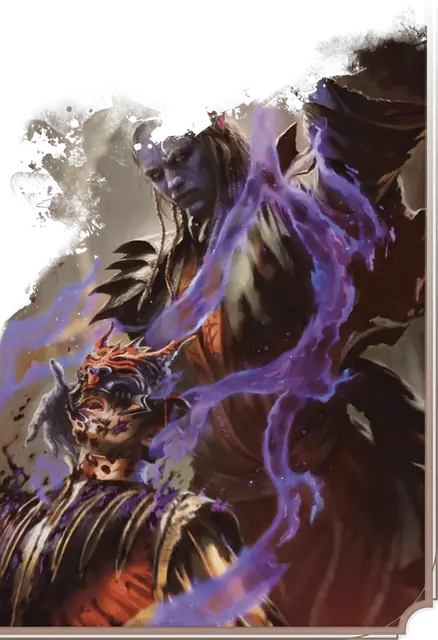

Наследник Мёртвой троицы
Dead Three Scion
Средний или Маленький Гуманоид, Нейтральный Злой

Класс Защиты 17 Инициатива +7 (17)
Хиты 221 (26к8 + 104)
Скорость 30 футов
| мод | спас | ||
|---|---|---|---|
| СИЛ | 20 | +5 | +5 |
| ЛОВ | 14 | +2 | +2 |
| ТЕЛ | 19 | +4 | +9 |
| мод | спас | ||
|---|---|---|---|
| ИНТ | 18 | +4 | +4 |
| МДР | 21 | +5 | +10 |
| ХАР | 24 | +7 | +7 |
Иммунитеты Некротический; Испуганный, Очарованный
Чувства пассивное Восприятие 15, Истинное зрение 120 футов
Языки Общий
Опасность 16 (15 000 опыта; БВ +5)
Особенности
Умерщвляющая аура. Спасбросок Телосложения: Сл 20, каждое Окровавленное существо в 30-футовой Эманации, исходящей от наследника, в конце хода наследника. Провал: Цель не может восстанавливать Хиты до начала следующего хода наследника.
Легендарное сопротивление (3/день). Если наследник проваливает спасбросок, он вместо этого может в нём преуспеть.
Сопротивление магии. Наследник совершает с Преимуществом спасброски от заклинаний и прочих магических эффектов.
Действия
Мультиатака. Наследник совершает две атаки Касанием смерти или Снарядом разрушения разума в любой комбинации.
Касание смерти. Бросок рукопашной атаки: +12, досягаемость 5 фт. Попадание: 25 (4к8 + 7) Некротического урона.
Снаряд разрушения разума. Бросок дальнобойной атаки: +12, дистанция 120 фт. Попадание: 21 (6к6) Психического урона, и цель Отравлена до начала следующего хода наследника.
Сотворение заклинаний. Наследник Мёртвой троицы сотворяет одно из следующих заклинаний, не нуждаясь в Материальных компонентах (заклинательная характеристика — Харизма, Сл спасброска заклинаний 20):
Неограниченно: Обнаружение мыслей, Рассеивание магии
2/день каждое: Наблюдение, Невидимость, Переносящая дверь
1/день каждое: Круг смерти, Сотворение нежити
Легендарные действия
У этого существа есть 3 использования Легендарных действий; оно может немедленно после окончания хода другого существа потратить одно использование, чтобы совершить одно из следующих действий. Существо восполняет все потраченные использования в начале каждого своего хода.
Атака. Наследник совершает одну атаку Касанием смерти или Снарядом разрушения разума.
Приказ. Наследник сотворяет Приказ (версия 2-го уровня, заклинательная характеристика — та же, что для Сотворения заклинаний). Наследник не может совершить это действие повторно до начала своего следующего хода.
Бонус мастерства +5
Среда обитания Город, Подземье
Сокровища Реликварные
Наследник Мёртвой Троицы
Преемник зловещего божественного триумвирата
Некоторые злобные смертные связывают свои души с Бейном, Баалом и Миркулом, обретая частицу тёмной божественной силы от каждого. Может, наследник Мёртвой Троицы заполучил эту силу в зловещем ритуале, а может, она была навязана ему злым Артефактом или злобной волей самого бога. Так или иначе, жестокость, жажда крови и некромантическая мощь слиты в нём воедино, и он служит Мёртвой Троице всей душой.
Наследник Мёртвой Троицы возглавляет культы Бейна, Баала или Миркула — а зачастую и все три сразу. Порой он управляет одним культом, где последователи трёх богов образуют непрочный и взрывоопасный союз, но может и по отдельности вести культы из тени, стравливая их друг с другом и направляя их усилия так, чтобы приносить в мир как можно больше страданий.